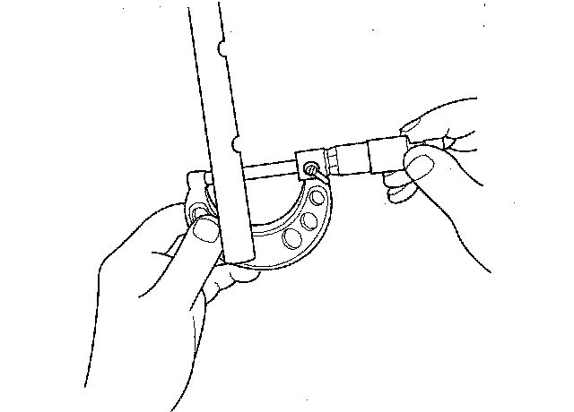
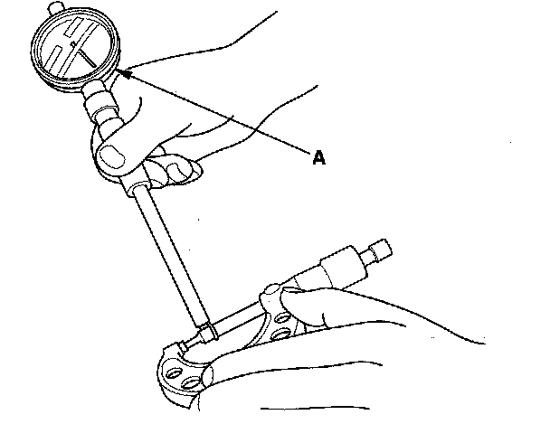
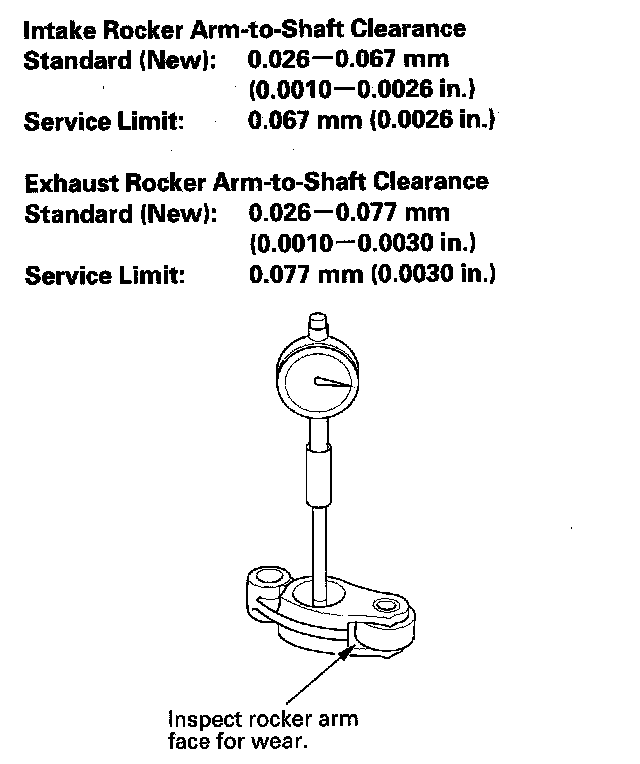
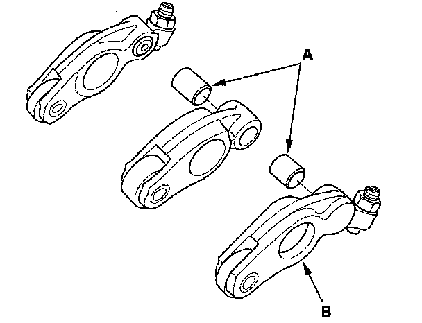

Rocker Arm and Shaft Inspection
Rocker Arm and Shaft Inspection1. Remove the rocker arm assembly.
2. Disassemble the rocker arm assembly.
3. Measure the diameter of the shaft at the first rocker location.

4. Zero the gauge (A) to the shaft diameter.

5. Measure the inside diameter of the rocker arm, and check it for an out-of-round condition.

6. Repeat for all rockers and both shafts. If the clearance is beyond the service limit, replace the rocker shaft and all rocker arms that are beyond the service limit. If any intake rocker arm needs replacement, replace all three rocker arms in that set (primary, mid, and secondary).
VTEC Rocker Arms
7. Inspect the rocker arm synchronizing pistons (A). Push them manually. If they do not move smoothly, replace the rocker arm set.
NOTE:
^ Apply new engine oil to the pistons when reassembling.
^ When reassembling the primary rocker arm (B), carefully apply air pressure to the oil passage of the rocker arm.

8. Reassemble the rocker arm assembly.
9. Install the rocker arm assembly.